방송통신기사 (2007-08-05 기출문제)
1과목: 디지털 전자회로
1. 다음 중 연산증폭기를 이용한 아날로그 컴퓨터 (analog computer)의 구성요소로 가장 적합하지 않은 것은?
- 적분기
- 미준기
- 합산기
- 비반전증폭기
(정답률: 알수없음)

2. 다음 그림은 어떤 유형의 플립플롭(FF)인가?
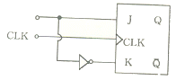
- M/S FF
- RS FF
- JK FF
- D FF
(정답률: 알수없음)
3. 출력전압이 40[V]인 증폭기가 2-j2√2[V]를 궤환시켰다면 궤환율 β는?
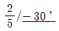
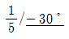
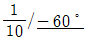
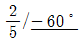
(정답률: 알수없음)
4. 이상적인 연산 증폭기의 구비 조건이 아닌 것은?
- 입력임피던스가 무한대이어야 한다.
- 출력임피던스가 0 이어야 한다.
- CMRR=1 이어야 한다.
- 전압이득이 무한대이어야 한다.
(정답률: 알수없음)
5. 그림과 같은 윈 브리지(Wein bridge) 발진회로의 발진주파수를 구하는 식은?
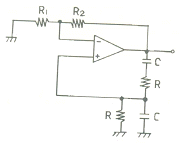
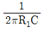
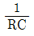
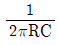
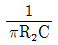
(정답률: 알수없음)
6. 드레인 접지형 FET증폭기의 특성을 설명한 것중 옳지 않은 것은?
- 완충증폭기로 적합하다.
- 전압이득은 약 1이다.
- 입력신호의 전압과 출력전압은 동상이다.
- 입력저항이 매우 작다.
(정답률: 알수없음)
7. 다음 중 L, C, R 직렬공진 회로의 Q는? (단, ωτ는 공진 각속도)
- L/CR
- ωτL
- R/ωτC
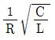
(정답률: 알수없음)
8. 다음 이상적인 연산증폭 회로의 출력전압은?
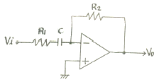
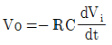
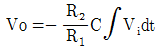
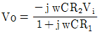
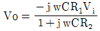
(정답률: 알수없음)
9. 저주파 전력 증폭기의 출력측 기본파 전압이 50[V]이고 제2 및 제3 고조파 전압이 각각 6[V]와 8[V]일 때 전체 왜율은?
- 5[%]
- 10[%]
- 20[%]
- 25[%]
(정답률: 알수없음)
10. 다음 중 평형 변조회로의 주 목적은?
- 변조도를 크게 하기 위함
- 직선성을 개선하기 위함
- SSB파를 얻기 위함
- 복조시 포락선 검파를 하기 위함
(정답률: 알수없음)
11. 다음 그림은 무슨 회로인가?
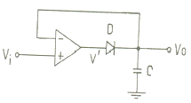
- Voltage follower
- Log amplifier
- Peak detector
- Integrator
(정답률: 알수없음)
12. 다음 중 그림과 같은 구형파를 미분회로에 통과시킬 경우 출력 파형에 가장 가까운 것은?
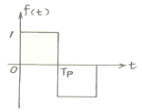
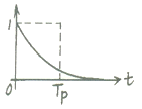
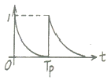
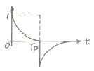
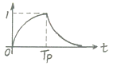
(정답률: 알수없음)
13. 그림은 진폭 Vp가 3[V], 펄스폭 λ가 0.25[ms], 주파수가 1[㎑]의 펄스파이다. 평균치를 지시하는 계기로 측정하면 몇 [V]가 되는가?
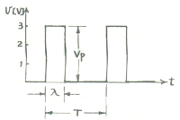
- 0.75
- 1.5
- 2.2
- 3.5
(정답률: 알수없음)
14. 다음 중 시미트 트리거 회로의 응용이 아닌것은?
- 전압비교 회로
- 구형파 발생
- 쌍안정 회로
- 삼각파 발생
(정답률: 알수없음)
15. 다음 그림과 같은 회로의 전달 특성은? (단, VR1＜VR2)
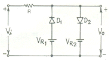
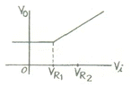
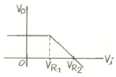
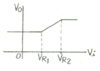
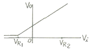
(정답률: 알수없음)
16. 1[㎒]을 입력으로 하는 분주 회로에서 출력을 250[㎑]로 만들려면 몇 개의 T 플립플롭이 필요한가?
- 1
- 2
- 3
- 4
(정답률: 알수없음)
17. 다음 회로의 기능으로 옳은 것은?
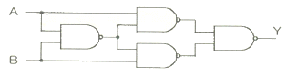
- JK 플립플롭
- T 플립플롭
- Ex-OR
- 가산기
(정답률: 알수없음)
18. Ex-OR와 Ex-NOR에 해당하는 논리식의 상호 변환이 틀린것은?
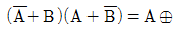
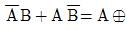
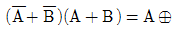
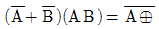
(정답률: 알수없음)
19. 다음 중 플립플롭회로를 활용할 수 없는 것은?
- 주파수분할기
- 주파수체배기
- 2진 계수기
- 기억소자 2
(정답률: 알수없음)
20. 다음 중 대수증폭기의 동작은 무엇에 기인하는가?
- 연산증포기의 선형 동작
- FM 방송에서 왜율이 증가한다.
- 송신기 출력회로의 조정이 곤란하다.
- TV방송에서 고스트(Ghost)가 많이 생길 수 있다.
(정답률: 알수없음)
2과목: 방송통신 기기
21. 임피던스 정합이 이루어지지 않으면 반사바가 생겨 급전선상에 정재파가 발생한다. 이 때의 현상과 거리가 먼 것은?
- 급전선에서 손실이 발생되지 않는다.
- FM 방송에서 왜율이 증가한다.
- 송신기 출력회로의 조정이 곤란하다.
- TV방송에서 고스트(Ghost)가 많이 생길 수 있다.
(정답률: 알수없음)
22. 다음 중 방송기기에 사용되는 측정기와 거리가 먼 것은?
- 파형 측정기
- 신호레벨 메터
- OTDR
- 벡터스코프
(정답률: 알수없음)
23. 다음 중 위성지구국의 설치장소의 선정조건이 아닌 것은?
- 정지위성을 직선으로 바라볼 수 있는 넓은 지역
- 비행기의 항로가 아닌 곳
- 기상조건이 좋은 곳
- 인근에 방송국이 위치한 곳
(정답률: 알수없음)
24. 오디오 콘솔의 기능 중 마이크 입력에서 들어오는 미약한 신호를 증폭하기 위한 것은?
- preamplifier
- potentiometer
- fader
- post-amplifier
(정답률: 알수없음)
25. 다음 중 TV방송 전파를 이용하여 TV방송과 함께 문자 또는 도형 형태의 정보제공이 가능한 뉴미디어는?
- 텔렉스
- 텔리텍스트
- CATV
- 비디오텍스
(정답률: 알수없음)
26. FM 방송수신기에서 스켈치 회로의 주사용 목적은?
- 안테나로부터 불필요한 복사를 방지한다.
- 국부발진주파수 변동을 방지한다.
- FM 전파 수신시 내부 잡음을 제거한다.
- 입력신호가 없을때 수신기 내부잡음을 제거한다.
(정답률: 알수없음)
27. 다음 중 필름, 슬라이드, 오페이크 카드 등의 광학적 기록 소재를 영상신호로 변환하는 것은?
- Master Monitor
- 콘솔
- 텔리시네(Telecine)장치
- 파형모니터(Waveform Monitor)
(정답률: 알수없음)
28. 다음 중 카메라의 위치를 움직이지 않고 카메라 헤드만을 수평방향으로 회전시키면서 촬영하는 것은?
- 패닝(panning)
- 틸팅(tilting)
- 달리(dolly)
- 붐(boom)
(정답률: 알수없음)
29. 다음 중 카메라맨이 촬영하는 화면을 보면서 모니터할 수 있는 카메라에 붙은 작은 TV화면을 무엇이라 하는가?
- view finder
- routing switcher
- prompter
- plumbicon
(정답률: 알수없음)
30. 다음 중 테이터 방송의 설명으로 옳은 것은?
- 데이터와 아날로그 음성을 보내는 방송
- 데이터와 이에 따르는 영상, 음성을 보내는방송
- 표준방송에 해당되는 방송
- 테레비전방송에 해당되는 방송
(정답률: 알수없음)
31. 위성방송 수신시에 안테나의 1차 방사기에 접속되어 있으며 12[㎓]의 수신 신호를 1[㎓]대의 중간 주파수로 변환시키는 것은?
- MAC
- LNB
- FET
- XPD
(정답률: 알수없음)
32. 다음 중 디지털 TV방송기술의 일반적인 특징이 아닌 것은?
- 아날로그 신호에 비해 잡음에 강하고 송신전력이 작다.
- 영상 및 음향신호의 압축이 가능하다.
- 정보의 검색, 가공 및 편집이 용이하다.
- 에러(Error) 정정 기술을 사용할 수 없고 전송, 복제, 축적에 따른 열화가 많다.
(정답률: 알수없음)
33. TV방송에서 수상되는 화상의 화질을 평가하고 조 정하는데는 정지화 패턴이 사용된다. 다음 중 화면의 사전 조정에 사용되는 신호를 무엇이라고 하는 가?
- 패턴 감쇠기(pattern attenuator)
- 테스트 패턴(test pattern)
- 테스트 제어기(test controller)
- 멀티테스터(multi-tester)
(정답률: 알수없음)
34. 방송송출장비의 기능 중 인물, 화상 등을 다른 화상에 끼어 넣는 화면 합성을 하기 위하여 색의 3요소 중 하나인 색상의 차를 이용하여 삽입시 활용하는 것은?
- 크로마키
- 루미넌스키
- 리니어키
- 매트키
(정답률: 알수없음)
35. 방송신호를 측정시 송신기 입력 전압이 0.5V일 때 출력 전압이 50V 였다면 송신기의 전압이득은 몇 dB 인가?
- 10
- 20
- 30
- 40
(정답률: 알수없음)
36. 방송 측정장비 붕 영상 신호와 색신호 성분을 복조하여 그 위상과 진폭을 측정하는 것은?
- 벡터스코프
- 오실로스코프
- 스펙트럼 분석기
- 패턴(Pattern)발생기
(정답률: 알수없음)
37. 다음 중 NTSC TV 복합 영상신호 레벨을 IRE로 표시할 때 휘도 신호의 최대값은?
- -40 IRE
- 0 IRE
- 50 IRE
- 100 IRE
(정답률: 알수없음)
38. 위성 뉴스 취재장치인 SNG의 Full Name은?
- Satellite Node Guideline
- Satellite News Gathering
- Satellite News Guideline
- Satellite Numbers Gathering
(정답률: 알수없음)
39. VTR을 재생할 때 화면이 흔들리지 않도록 보전 해주는 방송장비는?
- FS
- ADC
- DVD
- TBC
(정답률: 알수없음)
40. 다음 중 일정한 범위에서 출력 신호의 주파수를 반복하여 발생시키는 장치는?
- 오디오 신호발생기
- 볼트미터
- 스펙트럼 아날라이저
- 스위프 신호발생기
(정답률: 알수없음)
3과목: 방송미디어 공학
41. 다음 중 CD-ROM의 저장매체를 적용 대상으로 하는 압축 알고리즘의 표준은?
- MPEG-1
- MPEG-2
- MPEG-3
- MPEG-4
(정답률: 알수없음)
42. 색의 3요소에서 색이 갖고 있는 밝기를 나타내는 것은?
- Tone
- Hue
- Luminance
- Saturation
(정답률: 알수없음)
43. 다음 중 비디오텍스(Videotex)의 설명이 아닌 것은?
- 단방향통신 기능을 갖는 검색, 회화성 화상 및 정보서비스를 갖는다.
- 대용량의 축적정보를 제공한다.
- 일반적으로 정보단위로 요금이 부가된다.
- 시간적인 제한은 없으나 화면의 전송이 비교적 느리고 인터페이스가 필요하다.
(정답률: 알수없음)
44. 다음 중 원래의신호를 어느 정도 정확하게 재생시키느냐의 능력을나타내는 것은?
- 충실도
- 선택도
- 감도
- 실용도
(정답률: 알수없음)
45. 다음 중 시각적으로 인접한 두 화면간에 상관도가 높은 특징을 이용하여 매크로 블록으로 두 화면간의 움직임을 추정하여 보상함으로써 중복성을 제거하는 방법은?
- Temporal Redundancy
- Statistical Redundancy
- Spatial Redundancy
- Special Redundancy
(정답률: 알수없음)
46. 다음 중 NTSC 방식에서 복합신호의 구성 요소가 아닌 것은?
- 동기신호
- 휘도신호
- 색신호
- 파일롯신호
(정답률: 알수없음)
47. 다음 중 내국 TV NTSC 방식에서 영상신호의 변조방식은?
- AM
- FM
- PM
- PCM
(정답률: 알수없음)
48. 다음 중 아날로그 컬러 TV(NTSC방식)에서 영상신호의 주파수 대역폭은?
- 0.25[㎒]
- 1.25[㎒]
- 4.2[㎒]
- 4.5[㎒]
(정답률: 알수없음)
49. 다음 중 멀티미디어의 중요한 기술인 하이퍼미디어 기술을 사용하지 않은 것은?
- 인터넷
- 전자도서
- 화상회의
- 전자메뉴얼
(정답률: 알수없음)
50. 다음 중 오디오 신호의 양자화 과정에서 왜곡을 줄이기 위해 잡음 신호를 혼합하는 기법은?
- 에일리어싱(Aliasing)
- 디더링(Dithering)
- 오버 샘플링(Over Sampling)
- 렌더링(Rendering)
(정답률: 알수없음)
51. 다음 중 CATV 망을 설계하는데 있어서, 장거리에 걸쳐 분산되어 있는 다수의 가입자에게 가장 효율적인 현태는?
- Tree형
- Ring형
- Star형
- Mesh형
(정답률: 알수없음)
52. 다음 중 TV 프로그램의 제작 흐름으로 옳은 것은?
- 준비→기획→리허설→녹화→편집
- 기획→준비→리허설→녹화→편집
- 리허설→준비→기획→녹화→편집
- 준비→기획→리허설→편집→녹화
(정답률: 알수없음)
53. 다음 중 버퍼에 잠깐 머물러 있다가 바로 화면에 띄워져 대용량의 멀티미디어 정보를 전송하느데 유용한 것은?
- 하이퍼 텍스트
- 하이퍼 미디어
- 온 디엔드
- 스트리밍 기술
(정답률: 알수없음)
54. 영상 압축기법 중 새로운 화면 정보를 모두 다 기록하지 않고 앞 화면과의 차이만을 기록하는 방식은?
- 동작보상 기법
- 주파수 차원 변환 기법
- 서스샘플링 기법
- 델타프레임 기법
(정답률: 알수없음)
55. 다음 중 방송계 뉴미디어 부가서비스의 종류가 아닌것은?
- VOD(Video on Demand)
- 문자 다중방송
- FM 다중방송
- FDDI
(정답률: 알수없음)
56. 다음 중 동영상 또는 애니메이션 데이터 파일의 저장방식으로 볼 수 없는 것은?
- JPEG
- MPEG
- AVI
- FLC
(정답률: 알수없음)
57. 다음 중 위성방송의 설명으로 거리가 먼 것은?
- TV방송의 난시청 해소 대책으로 효율적이다.
- 중계기가 천재지변의 영향을 많이 받으므로 비상 재해 방송에 효과적이지 못하다.
- 고품질의 방송 서비스가 가능하다.
- 국가간, 대륙간 통신로 확보가 용이하다.
(정답률: 알수없음)
58. 화면내의 휘도 밸런스가 좋지 않으면 아름다운 영상표현을 만들 수 없다. 다음 중 피사체와 배경의 휘도비에 주의를 하기 위한 구체적인 방법에 속하지 않는 것은?
- 태양광을 흑사막, 비닐막 등오로 의해 감광 확산 시킨다.
- 태양광의 상황에 따라서는반사판을 사용한다.
- 화면 안에 고휘도를 만드는 원인이 되는 광원을 흑지, 합판 등으로 차광시킨다.
- 하이라이트 부분에 나뭇가지 등의 그림자를 만들어, 피사체와 배경의 콘트라스트 비를 증가시킨다.
(정답률: 알수없음)
59. 어떤 음 A를 듣고 있을 때, A보다 진폭이 큰 음 B가 가해지면 원래의 음 A는 들리지 않게 되는데 이러한 현상은?
- 도플러 효과
- 마스킹 효과
- 하스 효과
- 칵테일 파티 효과
(정답률: 알수없음)
60. 국내ㅔ 지상파 디지털 TV방송에서 영상신호의 압축방식은?
- MPEG-1
- MPEG-2
- MPEG-4
- MPEG-7
(정답률: 알수없음)
4과목: 방송통신 시스템
61. 광 통신에서 단일모드(single mode)와 멀티모드(multimode)의 분류 기준은?
- 전파모드
- 재료모드
- 제조방법
- 굴절률
(정답률: 알수없음)
62. 무궁화 3호 위성에는 Ka-band의 통신용 중계기를 탑재하고 있다. 다음 중 위성에서 Ka-babnd의 주파수대역에 가까운 것은?
- 12.5㎓ ~ 18.0㎓
- 10.0㎓ ~ 26.5㎓
- 26.5㎓ ~ 40㎓
- 40㎓ ~ 80㎓
(정답률: 알수없음)
63. 번개가 칠 때 모든 주파수 밴드의 수신기가 잡음의 영향을 받는 이유로 가장 적합한 것은?
- 번개는 광파이기 때문이다.
- 번개는 매우 높은 공중에서 발사되는 전파의 일종으로 모든 수신기에 잘 도달될 수 있는 위치에서 송신되기 때문이다.
- 번개는대표적인 충격성 잡음이며, 이러한 펄스형신호에는 모든 대역 성분의 잡음신호가 존재하기 때문이다.
- 모든 종류의 수신기는 번개에 대해서 취약하게 제도되었기 때문이다.
(정답률: 알수없음)
64. 다음 중 ATSC 방식의 채널당 대역폭은?
- 4㎒
- 4.38㎒
- 6㎒
- 6.38㎒
(정답률: 알수없음)
65. CATV 수신 가입자에게 분배선을 연장하기 위해 사용되는 증폭기는?
- 간선증폭기
- 연장증폭기
- 분기증폭기
- 분배증폭기
(정답률: 알수없음)
66. NTSC TV방식에서 수직 주파수의 한 주기는 약 얼마인가?
- 1.3ms
- 16.7ms
- 63.5ms
- 100ms
(정답률: 알수없음)
67. 다음 중 비워주사의 가장 큰 이점은?
- 전송주파수 대역을 반으로 줄 일 수 있다.
- 주사기간이 짧아진다.
- 화면의 깜박거림이 적다.
- 주사선의 동요가 적다.
(정답률: 알수없음)
68. 다음 중 위성방송시스템에서 이득과 잡음온도의 비를 타나내는 G/T[dB/K]와 가장 관계가 깊은 것은?
- 위성통신 안테나
- Scrambler
- Decoder
- BS tuner
(정답률: 알수없음)
69. 다음 중 영상반송파대 잡음비를 측정하는 주 목적은?
- 영상 신호의 해상도 저하방지와 잡음이 발생되는것을 방지하기 위해
- 영상 반송파의 레벨변동에 대한 잡음을 방지하기위해
- 영상 신호와 음성 신호의 상호간섭을 방지하기위해
- 잡음을 줄여 양호한 TV 화질을 보장하기 위해
(정답률: 알수없음)
70. 다음 중 방송망의 종류가 아닌 것은?
- 중파방송망
- 이동방송망
- 단파방송망
- 텔레비전방송망
(정답률: 알수없음)
71. 중계시스템은 송.수신 중계를 위한 중계차와 제작을 위한 중계차로 구분된다. 다음 중 현재 사용 가능한 송.수신 중계시스템의 방식이 아닌 것은?
- Twist pair 전송방식
- 마이크로웨이브 전송방식
- SNG 전송방식
- 광케이블 전송방식
(정답률: 알수없음)
72. 다음 중 텔레비전 중계용 마이크로파 FM송.수신을 총칭하는여 무엇이라 하는가?
- FPU
- TBC
- SNG
- STL
(정답률: 알수없음)
73. 다음 중 DVB-T(COFDM) 번송방식에서 사용하는 변조방식이 아닌 것은?
- QPSK
- 16-QAM
- 64-QAM
- FSK
(정답률: 알수없음)
74. 디지털 변조신호에 따라 반송파의 진폭과 위상을 동시에 변화 시키는 방식은?
- QAM
- FSK
- PSK
- ASK
(정답률: 알수없음)
75. 수퍼 헤테로다인(Super Heterodyne) 수신기의 장점이 아닌 것은?
- 고감도이다.
- 신호대 잡음비가 좋다.
- 선택도가 향상된다.
- 전원전압의 변동에 강하다.
(정답률: 알수없음)
76. 다음 중 CATV용 동축 케이블의 특성 임피던스는?
- 55Ω
- 70Ω
- 75Ω
- 80Ω
(정답률: 알수없음)
77. 다음 중 위성방송 수신시스템과 거리가 먼 것은?
- Set Top Box
- 진행파관(TWT)
- 접시형 안테나
- LNB
(정답률: 알수없음)
78. 출력이 5W인 M/W의 수신단 수신신호의 세기가 -30dBm일 때, 이 장비의 페이드 마진을 40dB로 주었다. 이 때 수신기의 한계레벨은 얼마인가?
- -70dBm
- -47dBm
- -33dBm
- -27dBm
(정답률: 알수없음)
79. AM 수신기 회로 중 여러 방송국에서 서로 다른 반송파로 변조시킨 전파들이 섞여 있는데 이들 전파 중에서 우리가 듣기를 원하는 방송의 전파를 선택해 주는 회로는?
- 고주파 증폭회로
- 동조회로
- 검파회로
- 저주파 증폭회로
(정답률: 알수없음)
80. 위성방송시스템의 가입자가 시청시 스크렘블을 해제하여야 하는데 이것을 디스크렘블이라 한다. 다음 중 디스크렘블방식이 아닌 것은?
- 자기카드를 이용하는 방식
- 방송전파를 이용하는 방식
- 전화회선을 이용하는 방식
- 전원 접지를 이용하는 방식
(정답률: 알수없음)
5과목: 전자계산기 일반 및 방송설비기준
81. 다음은 중아처리장치 내의 하드웨어요소와 그 기능을 짝지은 것이다. 서로 맞지 않는 것은?
- Register - 기억기능
- Accumulator - 제어기능
- ALU - 연산기능
- Internal bus - 전달기능
(정답률: 알수없음)
82. (-9)10를 부호화된 2의 보수(signed 2's complement)로 표시한 것은?
- 0001001
- 1001001
- 1110111
- 1110110
(정답률: 알수없음)
83. 다음 중 문자의 표시와 관계 없는 코드는?
- BCD 코드
- EBCDIC 코드
- 그레이(Gray) 코드
- ASCII 코드
(정답률: 알수없음)
84. 컴퓨터의 CPU가 명령을 수행하기 위하여 명령어를 기억장치에서 꺼내오는 일과 관계 깊은 사이클의 명칭은?
- Operation Cycle
- Instruction Cycle
- Fetch Cycle
- Direct Cycle
(정답률: 알수없음)
85. ASCII 코드의 존 비트와 디지트 비트의 구성으로 옳게 표시한 것은?
- 존 비트 : 4, 디지트 비트 : 3
- 존 비트 : 3, 디지트 비트 : 4
- 존 비트 : 4, 디지트 비트 : 4
- 존 비트 : 3, 디지트 비트 : 3
(정답률: 알수없음)
86. 다음 중 컴파일러 언어가 아닌 것은?
- C
- Perl
- COBOL
- PL/1
(정답률: 알수없음)
87. 가상 메모리(virtual memory)에서 페이지 폴트 (page rault)가 일어났을 때 주메모리(main memory)내의 참조 회수가 가장 작은 페이지를 교체하는 방법은?
- LRU(Least Recently Used)
- LFU(Least Frequently Used)
- NUR(Not Used Recently)
- FIFO(First In First Out)
(정답률: 알수없음)
88. 다음 중 deadlock의 발생 조건이 아닌 것은?
- 선취 조건
- 상호 배제 조건
- 환형 대기 조건
- 점유와 대기 조건
(정답률: 알수없음)
89. 마이크로 사이클 타임(Micro cycle time)에서 동기 고정식의 특징에 해당하는 것은?
- 모든 마이크로 오퍼레이션 수행 기간이 비슷할 때 유리하다.
- 마이크로 오퍼레이션 수행 기간의 차이가 클 때 유리하다.
- CPU의 시간을 효율적으로 이용한다.
- CPU가 기억 장치로부터 명령을 읽어 내기 위해서는 2개의 마이크로 사이클이 소요된다.
(정답률: 알수없음)
90. 다음 중 운영체제의 제어 프로그램에 해당하는 것은?
- 데이터 관리 프로그램
- 언어 처리 프로그램
- 서비스 프로그램
- 문제 처리 프로그램
(정답률: 알수없음)
91. 다음 중 아마추어국 및 간이무선국의 허가 유효 기간은?
- 5년
- 3년
- 2년
- 1년
(정답률: 알수없음)
92. 방송국을 개설하고자 할 때 절차가 옳은 것은?
- 방송위원회의 추천을 먼저 받은 후에 정보통신부장관의 방송국 허가를 받아야 한다.
- 정보통신부장관의 추천을 먼저 받은 후에 국무총리의 허가를 받아야 한다.
- 정보통신부장관의 추천 및 허가를 받아야 한다.
- 문화관광부장관의 추천을 받아 정보통신부장관의 방송국 허가를 받아야 한다.
(정답률: 알수없음)
93. 방송법에서 정의하는 방송사업에 해당되지 않는 것은?
- 종합유선방송사업
- 지상파방송사업
- 위성방송사업
- 중계방송사업
(정답률: 알수없음)
94. 다음 중 경미한 공사로 공사업자외의 자가 시공할 수 있는 공사가 아닌 것은?
- 간이무선국, 아마추어무선국 및 실험국의 무선설비
- 연면적 2천제곱미터 이하의 건축물의 자가 유선방송설비공사
- 인입되는 국선이 5회선 이하인 건축물의 구내통신선로 설비공사
- 군 및 경찰의 긴급작전을 위한 공사로서 정보통신부장관이 관계 중앙행정기관과의 형의하여 정하는 공 사
(정답률: 알수없음)
95. 다음 중 방송위원회 우원장의 임기는?
- 2년
- 3년
- 4년
- 5년
(정답률: 알수없음)
96. 다음 중 방송국 설비공사에 해당되지 않는것은?
- 송출 설비
- 방송관리 시스템 설비
- 음향 설비
- 통신처리장치 설비
(정답률: 알수없음)
97. 다음 중 방송위원회의 심의.의결 내용이 아닌 것은?
- 방송프로그램 및 방송광고의 운용.편성에 관한 사항
- 방송에 관한 연구.조사 및 지원에 관한 사항
- 방송의 기본계획에 관한 사항
- 방송 시설공사의 설계 및 감리용역에 관한 사항
(정답률: 알수없음)
98. 다음 중 공중선계의 충족 조건이 아닌 것은?
- 공중선은 이득이 높을 것
- 정합은 신호의 반사손실이 최소화 되도록 할 것
- 지향성은 복사되는 전력이 목표하는 방향을 벗어나지 아니하도록 안정적일 것
- 내부잡음이 적을 것
(정답률: 알수없음)
99. 다음 전파관계법 중에서 “지상파방송업무”의 정의는?
- 일정한 고정 지점간의 무선통신업무로서 지상의 송신설비를 이용하여 송신하는 무선통신업무
- 공중이 직접 수신하도록 할 목적으로 지상의 송신설비를 이용하여 송신하는 무선통신업무
- 공중이 간접 수신하도록 할 목적으로 지상의 송신설비를 이용하여 송신하는 무선통신업무
- 공중이 직접 수신하도록 할 목적으로 지상의 수신설비를 이용하여 송신하는 무선통신업무
(정답률: 알수없음)
100. 다음 중 감리원의 업무범위에 해당 되지 않는 것은?
- 공사계획 및 공정표의 검토
- 공사업에 대한 용역관리
- 설계변경에 관한 사항의 검토.확인
- 사용자재의 규격 및 적합성에 관한 검토.확인
(정답률: 알수없음)